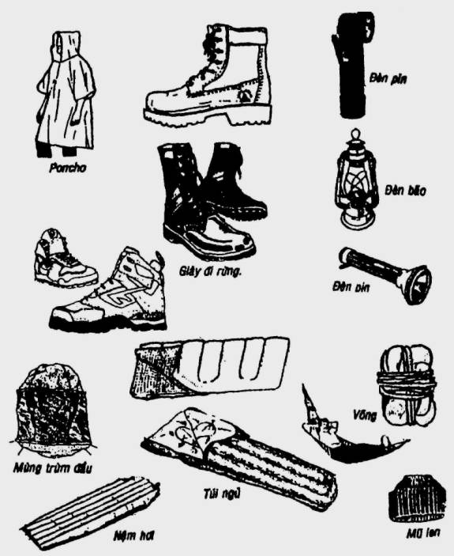
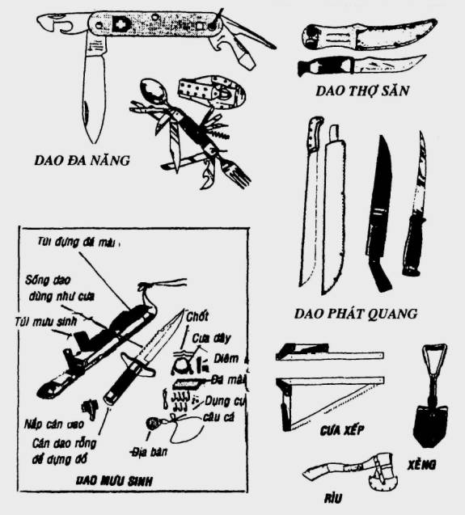
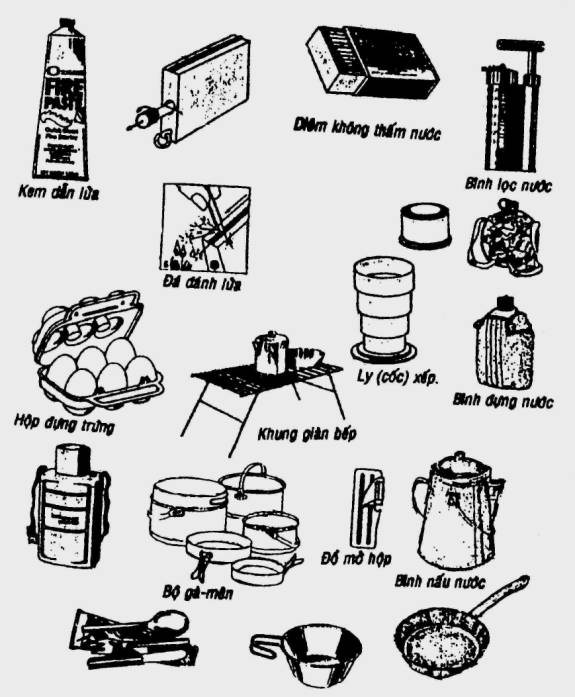
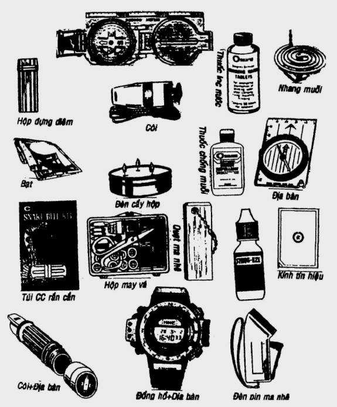

Danh mục các vật dụng dưới đây chỉ để gợi ý cho các bạn chọn lựa mà thôi, chúng ta không thể nào đủ sức để cõng theo tất cả được (trừ khi các bạn thám hiểm bằng cơ giới). Khi chọn lựa, các bạn phải tùy theo nhu cầu, mục đích, nhiệm vụ, địa thế, khí hậu... mà chọn những vật dụng thích hợp và cần thiết để mang theo. Có một số vật dụng hơi khó tìm kiếm trên thị trường, thường chỉ để trang bị cho những người có công tác đặc biệt.
NHỮNG VẬT DỤNG CẦN THIẾT
- Ba lô
- Sổ sách, giấy viết, nhật ký hành trình...
- Bản đồ, và địa bàn
- Thiết bị định vị toàn cầu GPS
- Đồng hồ
- Ống dòm
- Máy chụp hình & phim
- Máy thu thanh (radio)
- Điện thoại di động (nếu vùng có phủ sóng)
- Đèn pin & pin & bóng đèn dự phòng
- Đèn bão, đèn cầy
- Dao săn (hoặc dao rừng, dao mưu sinh...)
- Dao bỏ túi (đa chức năng)
- Rìu, rựa, cuốc, xẻng, cưa...
- Dây đủ cỡ
- Thuốc thoa chống muỗi
- Nhang đuổi muỗi
- Bình lọc nước loại nhỏ (mini filter)
- Tài liệu, sách hướng dẫn (cẩm nang)
Y PHỤC
Tùy theo thời tiết, khí hậu, thời gian hoạt động... để mang theo quần áo sinh hoạt và dự phòng.
- Áo quần sinh hoạt & nón nhẹ
- Áo quần chống lạnh & nón lông
- Áo mưa hay poncho
- Áo quần ngủ
- Áo quần lót
- Áo quần tắm
- Áo khoác
- Giầy vớ
- Dép guốc
- Găng tay
ĐỒ DÙNG CÁ NHÂN
- Khăn tay, khăn tắm
- Kem & bàn chải đánh răng
- Xà phòng giặt & bàn chải giặt
- Xà phòng tắm
- Dao cạo
- Gương, lược
- Kiếng mát
- Giấy vệ sinh
- Hộp may vá (đựng kim, chỉ, nút, kéo, lưỡi lam...)
DỤNG CỤ NẤU NƯỚNG & ĂN UỐNG
- Nồi, soong, chảo, ấm nấu nước...
- Dao, thớt
- Đồ khui hộp
- Tô, chén, dĩa, ly, gà mên...
- Vá, muỗng đũa...
- Bình đựng nước & ca uống nước & bao bình đựng nước
- Gàu, xô xách nước, can đựng nước
- Rổ, rá...
- Quẹt gaz ( hay diêm không thấm nước)
- Lò dầu hay bếp gaz nhỏ (mini) & dầu hay gaz dự phòng
THỰC PHẨM
- Gạo, nếp, bắp, đậu, bột...
- Gia vị (muối, tiêu, đường, bột ngọt, hành, tỏi, dầu ăn...)
- Thức uống (trà, cà phê, bột trái cây...)
- Thức ăn tươi (thịt, cá, trứng, rau, quả...)
- Thức ăn khô (tôm khô, cá khô, mì, lạp xưởng...)
- Thức ăn đóng hộp
DỤNG CỤ CẮM TRẠI – NGHỈ NGƠI
- Lều, bạt, poncho...
- Cọc, dây, gậy, dùi cui...
- Tấm lót
- Võng
- Túi ngủ, nệm hơi
- Mùng, mền, mùng trùm đầu
DỤNG CỤ CẦU CỨU
- Máy truyền tin
- Hỏa pháo
- Trái khói
- Kính phản chiếu
- Pa-nô, vải màu, cờ...
- Còi báo hiệu
- Đèn hiệu
DỤNG CỤ LEO NÚI
- Nón bảo hộ (helmet)
- Búa bám đá (rock hammer)
- Bao giắt búa (hammer holster)
- Nêm cắm, nêm đóng (pitons)
- Nêm chèn, nêm giắt (chocks & nuts)
- Khoen bầu dục biners (carabiners / snaplink)
- Giầy leo núi (Kletterschuhe/mountaineering shoes)
- Đai (swami belt)
- Dây (rope)
TÚI MƯU SINH
- Aspirin, vitamins
- Quẹt gaz hay diêm không thấm nước
- Băng dán cá nhân
- Dao nhíp, luỡi lam
- Đèn pin nhỏ (mini)
- Kính phản chiếu hay miếng kim loại bóng
- Dây cước, dây dù, lưỡi câu đủ cỡ
- Cưa dây
- Thuốc viên lọc nước
- Súp viên – muối tiêu hay muối xả ớt
- Còi cấp cứu
- Địa bàn nhỏ (mini)
TÚI CỨU THƯƠNG
- 1 chai Betadi (polyvidone iodee)
- 1 chai oxy già
- 1 chai thuốc đỏ
- 1 chai cồn
- 1 chai dầu gió
- 1 chai Amoniaque
- Bột Sulfamid hay bột Penicilline
- Kéo, kẹp, kềm...
- Ống tiêm & kim tiêm
- Thuốc chống sốt, giảm đau (Panadol, Cetamol, Aspirin...)
- Thuốc đau bụng, tiêu chảy (Ganidan, Parregorique...)
- Thuốc chống sốt rét (Chloroquine, Fansidar...)
- Thuốc kháng sinh (Ampicilline, Tetracyline...)
- Túi chữa rắn cắn (Snake bite Kit)
- Ruợu hội, viên hội (chữa rắn cắn)
- Băng vải, băng thun, băng tam giác...
- Băng keo, băng dán cá nhân
- Bông gòn thấm nước – gạc (gaze), compresse
GHI NHỚ:
TÚI CỨU THƯƠNG phải được giữ gìn cẩn thận, treo lên cao. Các loại thuốc phải được dán nhãn, ghi rõ tên thuốc, chủ trị, cách dùng... và phải bổ sung đầu đủ sau mỗi lần dùng.
Riêng về TÚI MƯU SINH, các bạn không nên đem ra sử dụng thường (trừ trường hợp bất đắc dĩ), để khỏi bị hao hụt, thất thoát. Vì nếu không, đến khi các bạn thật cần thì lại không có hoặc không đủ.



